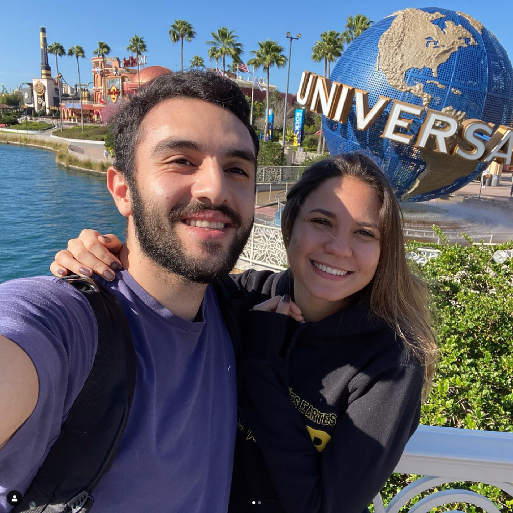

Quem somos?
Olááá, como vai você? Nós somos a ValiVelas. Va de Vanessa e ali de Ali Mourad Mourad, os melhores fabricantes de velas do mundo todo.
Nós (juntamente com a "Dora Alfreda Catiora"), fazemos a sua vela e a sua felicidade. Com muito amor, um pouco de estresse e muita vontade, sua vela sai prontinha daqui para ir para sua casa.
Além de sua beleza estética, as velas também têm sido associadas a efeitos terapêuticos e de relaxamento. A chama dançante de uma vela pode ser hipnotizante, induzindo uma sensação de calma e tranquilidade. Muitas pessoas incorporam velas em suas práticas de meditação e yoga, utilizando a luz suave para criar um ambiente propício à reflexão e ao autoconhecimento.
A decoração com velas é uma maneira simples e eficaz de transformar qualquer espaço em um refúgio acolhedor. De lanternas rústicas a elegantes candelabros, há uma infinidade de opções para adicionar um toque de estilo e elegância à sua casa. As velas também são frequentemente usadas em eventos especiais, como casamentos e jantares românticos, para criar uma atmosfera intimista e memorável.
Por fim, as velas também são uma forma de arte em si mesmas. Muitos artesãos dedicam tempo e habilidade para criar velas únicas e personalizadas, utilizando técnicas tradicionais e materiais de alta qualidade. Desde velas esculpidas à mão até velas decorativas com incrustações de gemas, há um mundo de criatividade esperando para ser explorado por aqueles que apreciam a beleza artesanal das velas.